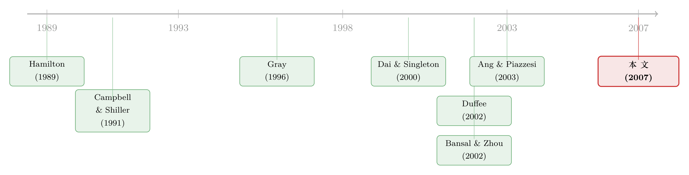

利率会换挡：当「换挡」本身也成了一种被定价的风险
本文读的是 Dai, Singleton & Yang (2007, Review of Financial Studies)：他们把一个「会换挡」的离散时间高斯利率期限结构模型写成无套利的闭式解，关键一步是让「换挡」这件事本身成为一种被定价的风险。结果发现——单机制模型在动荡年代严重低估了债券超额收益的波动，在平静的 1990 年代又高估了它；而且高波动机制其实没有低波动机制那么「黏」，收益率曲线那个著名的「驼峰」基本上只是低波动机制下的现象。
1 引言：一台只有一个挡位的车
先讲一个让人不太舒服的事实。
过去三十年里，研究短期利率的实证文献几乎众口一词：利率数据不是「一个世界」，而是「两个世界」——一个低波动、平静的世界，和一个高波动、动荡的世界，二者之间来回切换。这就是所谓的 机制转换 (regime switching) 模型，从 Hamilton (1989) 到 Gray (1996)，再到 Ang and Bekaert (2002a)，证据一篇比一篇扎实。
可是，到了给整条收益率曲线定价的 动态期限结构模型 (dynamic term structure model, DTSM) 这边，情况却完全相反。为了能写出零息债价格的闭式解、为了估计上的可行性，绝大多数实证 DTSM 仍然死守着「单机制」(single-regime) 的设定——整台车只有一个挡位，无论上坡下坡、晴天雨天，发动机的脾气始终如一（综述见 Dai and Singleton, 2003）。
于是一个很自然的张力就摆在那里：我们一边相信利率会换挡，一边却用一台只有一个挡位的车去给债券定价。 这不矛盾吗？
接着，一个更要命的问题是：就算我们勉强给模型装上两个挡位，「换挡」这个动作本身要不要标价？ 早期的几篇尝试——Naik and Lee (1997)、Bansal and Zhou (2002)——都给出了否定的答案：换挡是有的，但换挡的风险不被市场定价（用他们的话说，机制转移风险的市场价格为零）。Ang and Bekaert (2005) 在一个并行的研究里也做了同样的假设。
这篇论文的全部锋芒，就在于把这个被默认掉的假设撬开。
2 一个会换挡、又无套利的高斯框架
我们先把车的构造看清楚。
设有两个机制 \(s_t \in \{L, H\}\)（低波动 L、高波动 H），还有一个 \(N\) 维的风险因子向量 \(Y_t\)。作者的第一个聪明之处，是先在风险中性测度 \(Q\) 下把 \(Y\) 的分布参数化好，保证债券价格有闭式解；再在历史测度 \(P\) 那边叠上灵活的风险价格，去描述真实世界的收益率动态。
在风险中性世界里，给定当前机制 \(s_t = j\)，\(Y\) 服从
$$ Y_{t+1} = \mu^{Q}_{tj} + \Sigma^{j}\,\varepsilon_{t+1}, \qquad \varepsilon_{t+1}\sim N(0, I), $$
其中 \(\mu^{Q}_{tj} \equiv E^{Q}_t[Y_{t+1}\mid s_t=j]\)，而 \(\Sigma^j \equiv \Sigma(s_t=j)\) 是一个随机制变化、但不随时间变化的波动率矩阵。注意这里：机制内部是高斯的、波动率是常数，可一旦允许在两个机制间跳来跳去，\(Y_t\) 和债券收益率的条件波动率就变成了随时间变化的随机量——波动率的「随机性」是从换挡里长出来的，而不是硬塞进单个机制里的。
这里还藏着一个与主流不同的时点约定。Hamilton (1989) 的传统做法，是把 \(t+1\) 期状态的分布建立在未来机制 \(s_{t+1}\) 的条件上；而本文反其道而行，建立在当前机制 \(s_t\) 上。差别看似细微，含义却很关键：在作者的约定下，\(t\) 时刻所有的条件变量都落在投资者 \(t\) 时刻的信息集 \(I_t\) 里——投资者知道自己当下身处哪个机制。正是这一点，让定价核里各个部件有了一个干净、可解释的结构（下一节我们会看到）。
接着是定价。在三条假设（\(Y\) 的漂移结构、机制转移概率在 \(Q\) 下为常数、短率是 \(Y\) 的仿射函数）之下，零息债价格有了漂亮的指数仿射闭式解：
$$ D^{j}_{t,n} = e^{-A^{j}_n - B_n'\,Y_t}, $$
其中系数满足如下递推：
$$ A^{j}_{n+1} = \delta^{j}_0 + (\kappa^{Q}\theta^{Qj})'B_n - \tfrac{1}{2}B_n'\,\Sigma^{j}\Sigma^{j\prime}B_n - \log\!\Big(\sum_{k} \pi^{Qjk}\,e^{-A^{k}_n}\Big), $$
$$ B_{n+1} = \delta_Y + B_n - \kappa^{Q\prime}B_n, $$
初值 \(A^j_0 = 0,\ B_0 = 0\)。
请盯住 \(A^j_{n+1}\) 的最后那一项 \(-\log\big(\sum_k \pi^{Qjk}e^{-A^k_n}\big)\)。这就是「换挡」在债券价格里留下的指纹：今天身处机制 \(j\)，明天可能跳到机制 \(k\)，每条路径都按风险中性概率 \(\pi^{Qjk}\) 加权——债券价格因此是各个机制下「平行价格」的一个对数加权平均。换挡的可能性，被无套利条件干净地折进了贴现因子里。（关于「用一个递推把曲线拆成几个可解释部件」的思路，可对照《把利率曲线拆成三个人：稳态、习惯、与期待》。）
3 真正关键的一步：给「换挡」标个价
到这里，模型还只是「能换挡」。真正关键的一步，在于 \(P\) 和 \(Q\) 之间那座桥——Radon-Nikodym 导数 \((dP/dQ)_{t,t+1}\)。作者把它写成
$$ \Big(\frac{dP}{dQ}\Big)_{t,t+1} = e^{\,\Lambda_{t,t+1} + \frac{1}{2}\lambda_t'\lambda_t + \lambda_t'\Sigma_t^{-1}(Y_{t+1}-\mu^{Q}_t)}, $$
它由两个市场价格驱动：\(\lambda_t = \lambda(Y_t, s_t)\) 是 因子风险的市场价格 (market price of factor risk, MPF)，\(\Lambda_{t,t+1} = \Lambda(Y_t, s_t; s_{t+1})\) 是 机制转移风险的市场价格 (market price of regime-shift risk, MPRS)。由它倒推出的定价核就是全文的心脏：
为什么说这两个部件配得上「市场价格」这个名字？作者用两笔最干净的交易把它们「指认」了出来。
其一，因子风险的价格。 考虑一个支付 \(e^{-b'Y_{t+1}}\) 的证券，它只暴露在因子风险上。算一算它的对数预期超额收益（相对一期短率），结果是
$$ \log\frac{E_t[e^{-b'Y_{t+1}}\mid s_t=j]}{P^{j}_t} - r^{j}_t = -\,b'\Sigma^{j}\lambda^{j}_t. $$
由于 \(b'\Sigma^j\) 正是这个证券对因子风险的「暴露量」，那么 \(\lambda^j_t\) 就是每单位因子风险暴露所对应的超额收益——这正是「风险的价格」的定义。
其二，换挡的价格。 再考虑一个只在「明天跳到机制 \(k\)」时支付 1、否则支付 0 的证券。它的对数预期超额收益恰好等于
$$ \log\frac{E_t[\mathbf{1}\{s_{t+1}=k\}\mid s_t=j]}{P^{j}_t} - r^{j}_t = \Lambda^{jk}_t. $$
也就是说，\(\Lambda^{jk}_t\) 天然就是「从机制 \(j\) 换到机制 \(k\)」这一动作的风险价格。它与历史/风险中性转移概率之间有一个极其简洁的关系：
$$ \pi^{Pjk}_t = \pi^{Qjk}\,e^{\Lambda^{jk}_t}, \qquad \Lambda^{jk}_t = \log\frac{\pi^{Pjk}_t}{\pi^{Qjk}}. $$
这个式子的味道很值得品。早期文献令 \(\Lambda^{jk}_t = 0\)，等价于强行规定 \(P\) 测度与 \(Q\) 测度下的换挡概率一模一样。本文松绑之后，换挡概率在两个测度下可以系统性地不同，这个差额就是换挡风险的补偿。
更进一步，作者把因子风险价格设成 Duffee (2002) 的「本质仿射」(essentially affine) 形式，并允许它随机制变化：
$$ \lambda^{j}_t = (\Sigma^{j})^{-1}\big(\lambda^{j}_0 + \lambda^{j}_Y\,Y_t\big), $$
而历史测度下的换挡概率则采用 Gray (1996) 以来常用的 logistic 形式，让它直接依赖于潜在因子 \(Y_t\)（而非收益率本身）：
$$ \pi^{Pjk}_t = \frac{1}{1+e^{\eta^{jk}_0 + \eta^{jk}_Y Y_t}},\qquad \pi^{Pjj}_t = 1-\pi^{Pjk}_t,\quad j\neq k. $$
于是预期超额收益被自然地拆成两块：一块来自因子风险，一块来自换挡风险。这正是单机制模型（\(\Lambda^{jk}_t \equiv 0\)）结构性缺失的那一块。
4 数据与估计
数据是美国国债零息债收益率的月度序列，样本跨度约从 1970 年到 2005 年（即图 1 横轴覆盖的区间）。识别上的便利来自模型本身：因为有了闭式债券价格，作者可以写出收益率的解析似然函数，并据此做极大似然估计。
作者比较的是两个嵌套关系明确的模型：单机制三因子高斯模型 \(A_0(3)\)，与它的两机制对应物 \(A^{RS}_0(3)\)。后者在前者基础上多了三样东西——机制依赖的波动率矩阵 \(\Sigma^j\)、状态依赖的换挡概率 \(\pi^{Pjk}_t\)、以及被定价的换挡风险 \(\Lambda^{jk}_t\)。
5 主要结果：动荡时更动荡，平静时更平静
把两个模型隐含的预期超额收益画在同一张图上（论文图 1，分别针对 2 年期和 10 年期零息债），故事一下子就讲清楚了。
第一，动荡年代的大起大落，单机制模型几乎全都漏掉了。 \(A^{RS}_0(3)\) 的超额收益在三个时段出现剧烈的上下尖峰——1970 年代中期、1980 年代初的「美联储实验」(Fed experiment) 时期、以及 1980 年代中期；2 年期的摆幅大致在 \(\pm 2\%\)、10 年期在 \(\pm 4\%\) 量级。而单机制的 \(A_0(3)\) 对这些大摆动基本无动于衷。捕捉到这些摆动的核心，正是被定价、且状态依赖的换挡风险。
第二，平静的 1990 年代，反过来了。 这一次是 \(A_0(3)\) 的超额收益波动得远比 \(A^{RS}_0(3)\) 厉害。两机制模型之所以能在平静期「沉得住气」，是因为它允许因子风险溢价（以及背后的因子风险价格）在 H、L 两个机制里有截然不同的行为——这种差异在单机制模型里按构造是不存在的。
合起来一句话：省略换挡风险，会让单机制模型在机制转换的当口低估超额收益的波动，又在风平浪静时高估它。
第三，一个被「常数换挡概率」掩盖了的不对称。 在 \(\pi^P\) 为常数的传统文献里（如 Ang and Bekaert, 2002b；Bansal and Zhou, 2002），标准结论是 \(\pi^{PHH} > \pi^{PHL}\) 且 \(\pi^{PLL} > \pi^{PLH}\)——两个机制都很「黏」、都高度持续。本文用状态依赖的 \(\pi^P_t\) 复现了 \(E[\pi^{PLL}_t] > E[\pi^{PLH}_t]\)，但发现：虽然 \(E[\pi^{PHH}_t]\) 仍大于 \(E[\pi^{PHL}_t]\)，二者的差距远没有常数 \(\pi^P\) 模型里那么大。换句话说——高波动机制其实没有低波动机制那么持久。而且这个不对称在一个纯描述性（不定价）的收益率模型里同样存在，说明任何强加常数 \(\pi^P\) 的模型，都在系统性地遗漏利率周期里一个真实而重要的不对称。
第四，收益率波动率的「驼峰」是个低波动机制现象。 得益于因子相关结构上更高的灵活性，\(A^{RS}_0(3)\) 能复现债券收益率变动的波动率期限结构里那个著名的「驼峰」(hump)，并探讨它的机制依赖性——结果是这个驼峰基本上只在低波动机制里出现。这恰恰是 Bansal and Zhou (2002) 那类 CIR 式模型做不到的：相互独立、均值回复的因子设定，几乎强制所有机制下的波动率期限结构都向下倾斜。（关于「曲线拟合得好不代表波动率拟合得好」这个一再出现的教训，可参见《收益率曲线拟合得再好，也可能对波动率「充耳不闻」》 与《波动率到底藏在哪里？》。）
6 文献脉络
这条线索可以分成两支，本文做的是把它们「焊」在一起。
一支是机制转换的实证传统：Hamilton (1989) 开宗立派，把机制转换引入非平稳时间序列与商业周期分析；随后 Cecchetti, Lam and Mark (1993)、Gray (1996)、Garcia and Perron (1996)、Ang and Bekaert (2002a) 一路把它用到利率上，反复确认「两个世界」的存在。但这一支大多是描述性的——它告诉你利率会换挡，却不告诉你换挡的风险值多少钱。
另一支是无套利的仿射期限结构传统：Dai and Singleton (2000) 给仿射模型做了系统的分类与规范分析，Duffee (2002) 与 Dai and Singleton (2002) 证明「本质仿射」模型里足够持续而多变的因子风险溢价，能解开 Campbell and Shiller (1991) 的预期假说之谜，Ang and Piazzesi (2003) 又把宏观变量请进了无套利 VAR。这一支精于定价，却长期困在单机制里。

最接近本文的，是 Bansal and Zhou (2002)：他们也做带机制转换的 DTSM，但用的是近似的 CIR 式框架、假设 \(\pi^P\) 为常数、且不给换挡风险定价。本文的位置因此很清楚——它在一个高斯、可精确定价的框架里，同时放开了状态依赖的 \(\pi^P_t\)、被定价的换挡风险 \(\Lambda^{jk}_t\)、以及机制间灵活的因子相关结构，从而第一次能把「换挡风险」与「因子风险」对预期超额收益的贡献分开来看。
7 评论与延伸（Q&A + 研究方向）
(a) 几个可能的疑问
Q：所谓「给换挡定价」，和「让换挡概率随状态变化」是一回事吗？
不是。这是本文两个相互独立的松绑。让 \(\pi^P_t\) 随因子 \(Y_t\) 变化（状态依赖），刻画的是真实世界里换挡时机的可预测性；而给换挡定价（\(\Lambda^{jk}_t \neq 0\)），刻画的是投资者要为「踩中换挡」索取多少补偿，体现为 \(\pi^P_t\) 与 \(\pi^Q_t\) 系统性地不同。早期文献两者都关掉，本文两者都打开。
Q：机制内部波动率是常数，凭什么说模型有随机波动率？
关键在「换挡」本身。给定单一机制，\(Y\) 的条件方差 \(\Sigma^j\Sigma^{j\prime}\) 确实是常数；但因为下一期可能跳到另一个 \(\Sigma^k\) 不同的机制，按 \(P\) 测度算的条件方差就成了各机制方差的混合——它随当前状态、当前机制而变，也就是随机波动率。波动率的随机性是「机制混合」涌现出来的，不是塞进单个机制的。
Q：为什么坚持用「当前机制」而不是 Hamilton 的「未来机制」来设定条件分布？
为了让定价核可解释。在「当前机制」约定下，\(t\) 时刻的所有条件变量都在投资者 \(t\) 时刻信息集内（他知道自己此刻在哪个机制），于是 \(M_{t,t+1}\) 能干净地拆成短率、换挡风险价格、因子风险价格三块，和连续时间文献完全对得上。作者也指出，在连续时间极限下两种约定等价；在纯描述性模型里二者似然函数也几乎一致，差别只在某些初始条件概率的诠释上。
Q：「高波动机制不那么持久」这个结论，会不会只是模型设定逼出来的假象？
作者专门做了一道防御：同样的不对称在一个纯描述性、不涉及定价的收益率模型里也出现。这说明它不是定价结构的产物，而是数据里真实存在的特征——任何强加常数 \(\pi^P\) 的模型（无论描述性还是定价性）都会把它抹掉。
Q：和 Bansal–Zhou (2002) 到底谁优谁劣？
不是简单的优劣，两个模型在因子风险价格的设定上互不嵌套。Bansal–Zhou 是「完全仿射」的 CIR 式、风险价格正比于波动率，但允许 \(\delta^j_Y\)、\(\kappa^{Qj}\) 随机制变化，代价是只能用线性化做近似定价；本文是高斯「本质仿射」、能精确定价，代价是机制内波动率为常数。各有取舍。
Q：换挡风险被定价，对预期假说检验意味着什么？
意味着「整体上拒绝预期假说」可能掩盖了机制间的异质性。Duffee (2002) 和 Dai and Singleton (2002) 已说明持续而多变的因子溢价能解释 Campbell–Shiller 之谜；本文进一步暗示，预期理论的检验在 H 与 L 两个机制里可能给出不同的结果，笼统地做全样本检验会把这层结构平均掉。
(b) 几个可能的研究问题与提案
1. 把「换挡风险定价」搬到公司债与信用利差上。 【经济故事】信用利差里既有违约预期，也有风险溢价；如果违约/流动性环境本身在「平静—危机」两个机制间切换，那么「踩中危机切换」这件事就该有自己的价格，正如本文里换挡有价格一样。这能把信用利差的周期性补偿从纯违约部分里剥出来。 【可行性】中。需要 TRACE 成交数据 + 评级/违约数据，可在本文的两测度框架上叠一个信用机制；识别难点在于把违约机制与利率机制分开，月度数据下两层机制的同时识别会很吃样本。
2. 外资持有人是不是「机制切换」的推手？ 【经济故事】本文让 \(\pi^P_t\) 依赖潜在因子 \(Y_t\)，但没问这些因子背后是谁在交易。若外资在美债市场的持有份额本身就是高/低波动机制切换的前兆变量，那么「换挡概率」就有了一个可观测的经济驱动。 【可行性】中。数据可用 TIC（美国国际资本流）月度持有 + 本文的收益率因子；识别上可把外资份额放进 logistic 的 \(\eta^{jk}_Y\) 设定里检验其边际贡献，难点是外资流入与利率波动的内生性。（与《外资真是「蝗虫」吗？》 关心的长期影响是互补的两个角度。）
3. 流动性机制 vs. 波动率机制：是同一个挡，还是两个挡？ 【经济故事】本文的「高波动机制」会不会其实是「低流动性机制」的影子？把流动性（如做市商资产负债表、买卖价差）作为第二维机制变量引入，可检验波动率机制是否就是流动性机制。 【可行性】中。可借鉴 COVID 期间公司债流动性危机的微观证据（参见《差点死掉的那个市场》）。难点是多机制模型的维度爆炸与识别。
4. 换挡风险价格的「价值」检验。 【经济故事】本文用 in-sample 似然展示了换挡定价的统计重要性；但它在样本外的久期/利差择时上值不值钱，是一个独立且更苛刻的问题。 【可行性】高。直接用本文模型做滚动样本外预测，与单机制 \(A_0(3)\) 比较夏普比率即可，数据现成、识别清楚。
我的判断
这篇论文的贡献是结构性的，而非边际性的。它把「机制转换」与「无套利定价」这两条多年来各走各路的文献，用一个能精确定价、又能写出解析似然的高斯框架真正缝在了一起；而那个被前人默默关掉的开关——给换挡本身定价——一旦打开，立刻把单机制模型在动荡期与平静期两头都「拟合不好」的毛病解释清楚了。「高波动机制不那么持久」「驼峰是低波动现象」这两个发现，单凭它们就足以让任何强加常数 \(\pi^P\) 的建模者重新掂量自己的设定。
对识别，我有两点保留。其一，潜在因子 \(Y_t\) 同时驱动收益率水平、波动率、和换挡概率，三者在月度样本里同时识别的难度不小；论文里也坦承 \(Q\) 测度下有一个根接近非平稳。两机制 × 三因子 × 状态依赖换挡的参数空间相当大，估计对初值与样本期的敏感性值得更多展示。其二，机制本身是潜变量——「高/低波动」是模型推断出来的，不是外生标定的；它与真实经济事件（美联储实验、衰退）的对应有多稳健，需要更直接的外部验证。
我接下来最想看到的，是它的样本外表现：换挡风险的价格究竟是统计上的好看，还是真能转化为债券择时的经济价值；以及，当把这套「会换挡、且换挡有价」的逻辑搬到信用市场与外资持有结构上时，那条被定价的暗线是否依然站得住。
参考文献
Ang, A., and G. Bekaert (2002a). Regime Switches in Interest Rates. Journal of Business and Economic Statistics 20, 163–182.
Ang, A., and G. Bekaert (2002b). Short Rate Nonlinearities and Regime Switches. Journal of Economic Dynamics and Control 26, 1243–1274.
Ang, A., and M. Piazzesi (2003). A No-Arbitrage Vector Autoregression of Term Structure Dynamics with Macroeconomic and Latent Variables. Journal of Monetary Economics 50, 745–787.
Bansal, R., and H. Zhou (2002). Term Structure of Interest Rates with Regime Shifts. Journal of Finance 57, 1997–2043.
Campbell, J., and R. Shiller (1991). Yield Spreads and Interest Rate Movements: A Bird's Eye View. Review of Economic Studies 58, 495–514.
Cecchetti, S., P. Lam, and N. Mark (1993). The Equity Premium and the Risk-free Rate: Matching the Moments. Journal of Monetary Economics 31, 21–45.
Dai, Q., and K. Singleton (2000). Specification Analysis of Affine Term Structure Models. Journal of Finance 55, 1943–1978.
Dai, Q., and K. Singleton (2002). Expectations Puzzles, Time-Varying Risk Premia, and Affine Models of the Term Structure. Journal of Financial Economics 63, 415–441.
Dai, Q., and K. Singleton (2003). Term Structure Dynamics in Theory and Reality. Review of Financial Studies 16, 631–678.
Duffee, G. R. (2002). Term Premia and Interest Rate Forecasts in Affine Models. Journal of Finance 57, 405–443.
Garcia, R., and P. Perron (1996). An Analysis of the Real Interest Rate Under Regime Shifts. Review of Economics and Statistics 78, 111–125.
Gray, S. (1996). Modeling the Conditional Distribution of Interest Rates as a Regime Switching Process. Journal of Financial Economics 42, 27–62.
Hamilton, J. (1989). A New Approach to the Economic Analysis of Nonstationary Time Series and the Business Cycle. Econometrica 57, 357–384.
Naik, V., and M. H. Lee (1997). Yield Curve Dynamics with Discrete Shifts in Economic Regimes: Theory and Estimation. Working Paper, University of British Columbia.